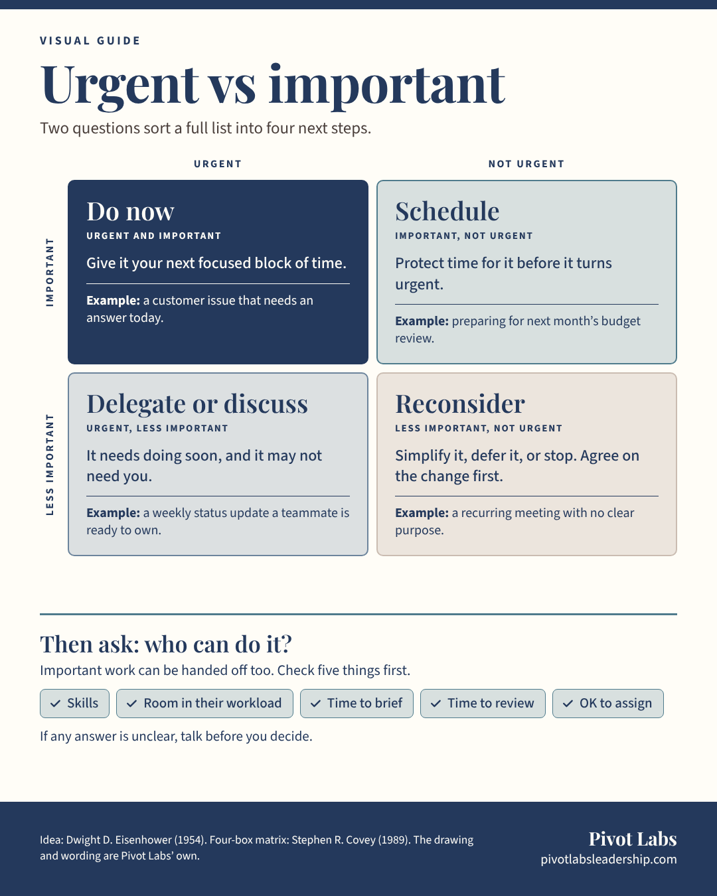
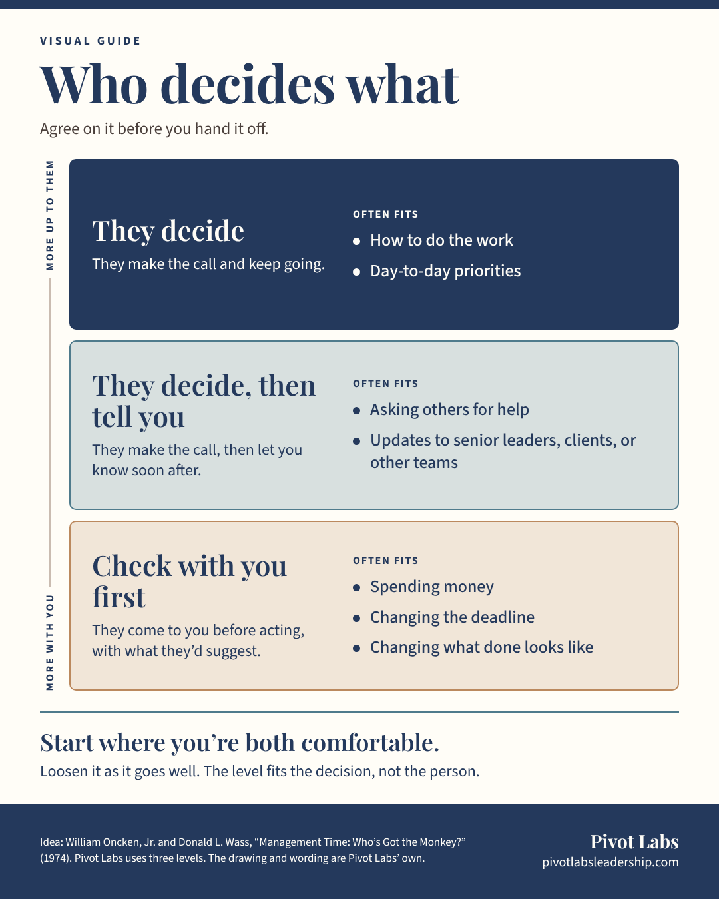
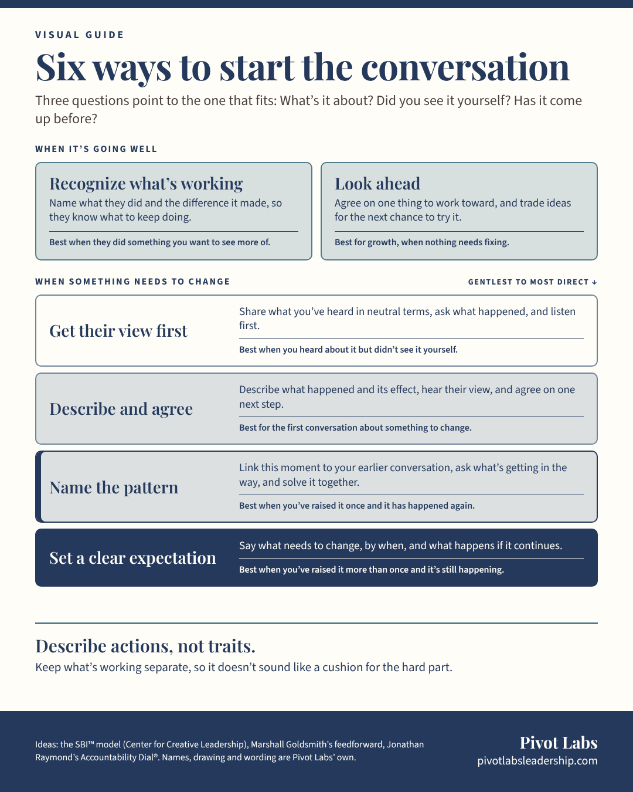
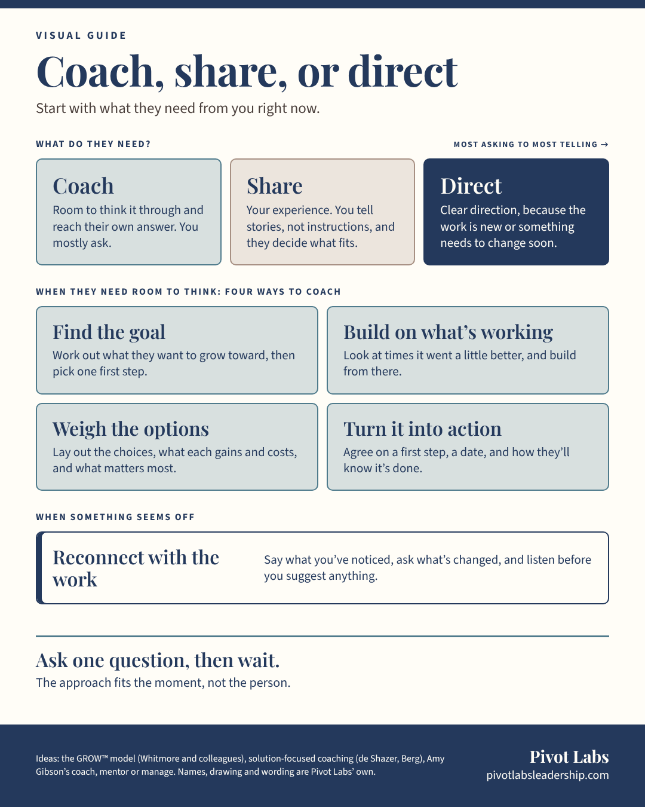
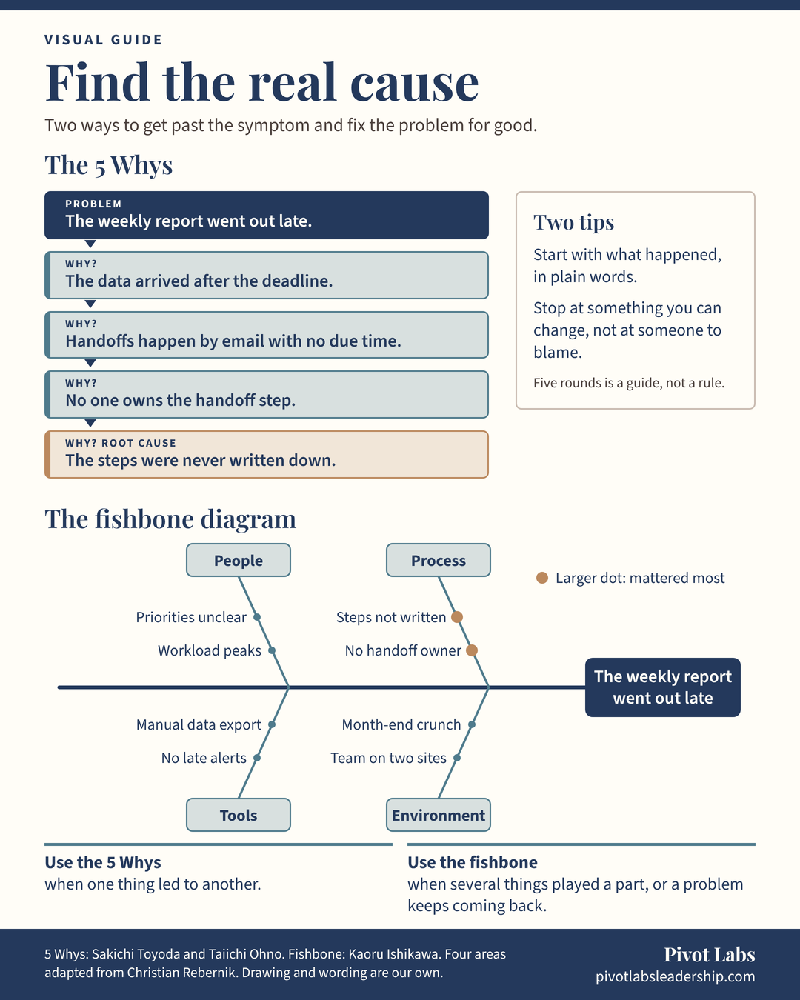
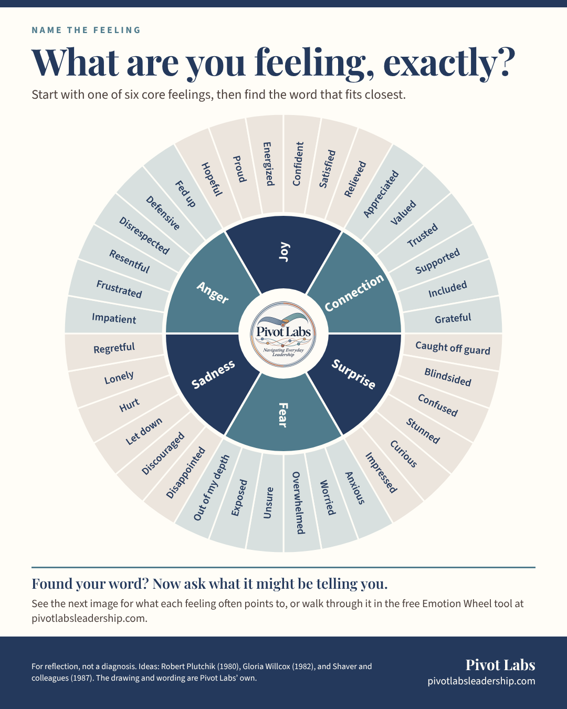
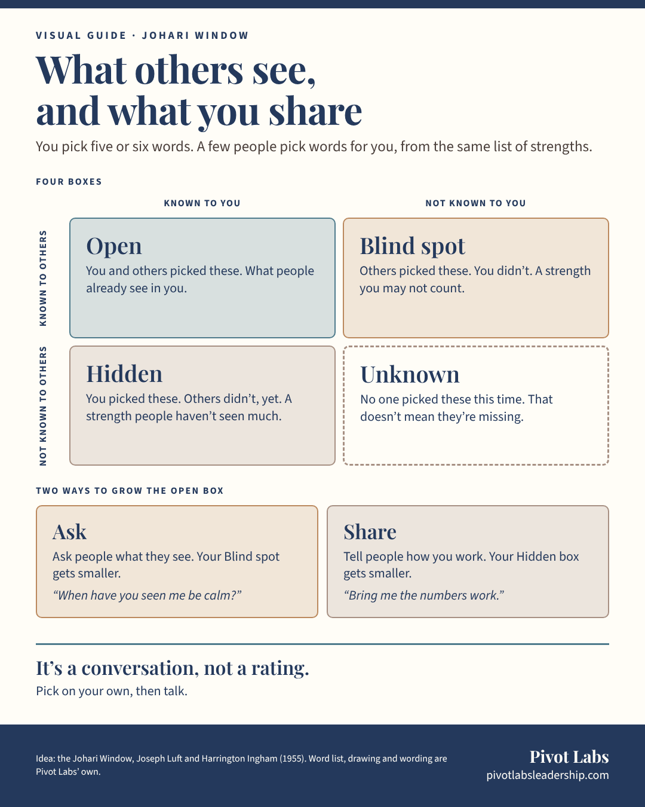

To save an image, open it, then press and hold it (or use your device’s Share or right-click menu) and choose the save option.
-

Urgent vs important
Two questions sort a full list into four next steps, with an example for each and a third question about who can do the work.
Goes with the Eisenhower Matrix.
-

Who decides what
Three levels for who makes which calls in a handoff, with a starting point for common decisions and an example.
Goes with the Delegation Planner.
-

Six ways to start the conversation
Three questions point to one of six ways to start a feedback conversation, from recognizing what’s working to setting a clear expectation, with an example.
Goes with the Feedback Conversation Planner.
-

Skill and will
Two questions about skill and will point to one of four ways to support someone, with an example for each and a third question about what is behind hesitation.
Goes with the Team Development Map.
-

Coach, share, or direct
Start with what the person needs from you, then choose from seven approaches that run from asking questions to giving clear direction, with an example you can follow.
Goes with the Coaching Approach Picker.
-

Find the real cause
The 5 Whys and the fishbone diagram, with one example you can follow from the problem to its root cause.
Goes with the Root Cause Finder.
Know yourself as a leader
-

Emotion Wheel
Six core feelings with six more exact words under each, plus what each feeling often points to and one next move.
Goes with the Emotion Wheel.
-

What others see, and what you share
The four boxes of the Johari Window, two ways to grow the Open box, and an example of one person's window and the talk it started.
Goes with the Johari Window.
This collection is growing. New guides are added regularly.